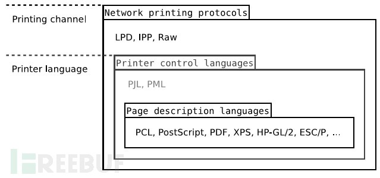

Created: 2020-06-07 Sun 18:14
并口 串口
待打印的文件 --计算机--> 光栅格式 --USB--> 打印机
PCL和PS是两种标准化的页面描述语言(PDL)
打印内容 --计算机--> 标准的页面描述文件-打印机控制器--> 光栅图像

CUPS 标准配置，与 CUPS 一起发行的
图像-------------------\
ASCII 文本 -------------\
------------> PostScript
PDF文件 ----------------/
HP-GL/2矢量文档--------/
PostScript ----> 过渡的文件格式
PPD 将文档换成设备本地语言的过滤器
*cupsFilter: "application/vnd.cups-raster 0 rastertohp
MIME 文件 --rastetohp--> HP PCL数据
用于并口、TCP/IP套接字连接、LPD和其它端点的连接